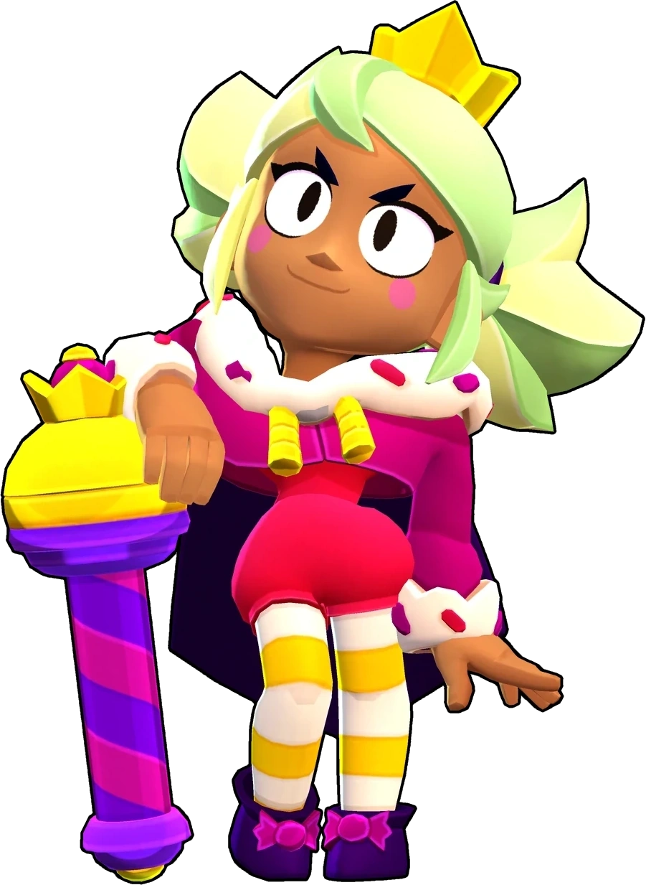

¿Quién es Mandy?
En su tienda de caramelos, Mandy reparte golosinas vestida con un disfraz digno de la princesa de un dulce reino. A veces el papel se le sube a la cabeza y reina sobre sus dominios con puño de hierro.
Mandy es una brawler Épica que se pudo desbloquear al conseguir el nivel 30 del Brawl Pass número 16: Chuchelandia, ahora puede ser obtenida en el Camino Starr. Mandy ataca dispara un caramelo desde su dispensador de caramelos. Al igual que un francotirador promedio, Mandy posee un gran daño, poca salud y un largo alcance, aunque puede tener aún más alcance cuando se llena una barra al quedarse quieta, aunque pierde ese alcance extra cuando vuelve a moverse. Ella al usar su súper puede lanzar una explosión de azúcar que posee un alcance muy alto que causa mucho daño y puede atravesar enemigos y paredes.
|  |
NIVEL DE FUERZA 11 |
Sus gadgets
CARAMELIZACIÓN: El siguiente caramelo del dispensador de caramelos de Mandy ralentizara a los enemigos por 2,5 segundos |
MIGAS DE GALLETAS: El siguiente caramelo del dispensador de caramelos de Mandy atraviesa a los enemigos y al entorno |
Sus habilidades estelares
 |
A LA VISTA: Mandy lanza caramelos con un 20% más de velocidad cuando esta concentrada. |
 |
CARAMELO RESISTENTE: Mandy se cubre con un escudo de un 30% cuando está concentrada. |
 Braian Arancibia
Braian Arancibia Aya El Baarar
Aya El Baarar